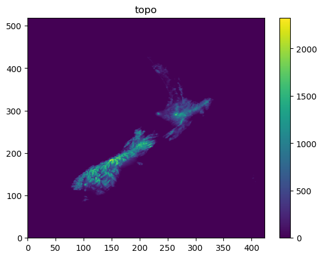
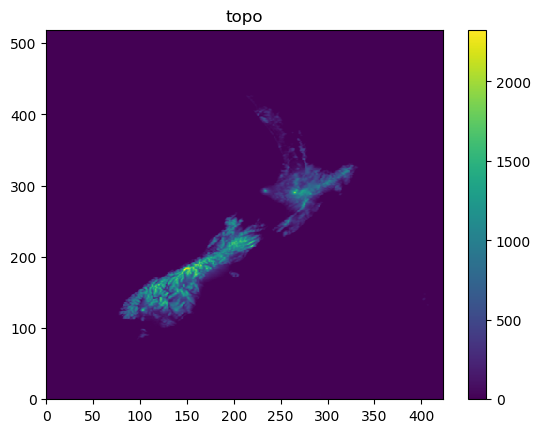
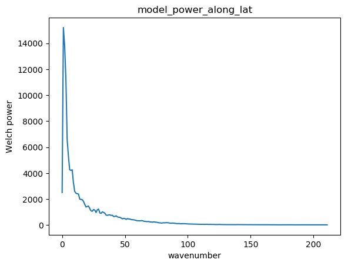
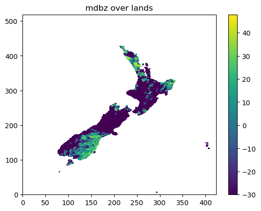
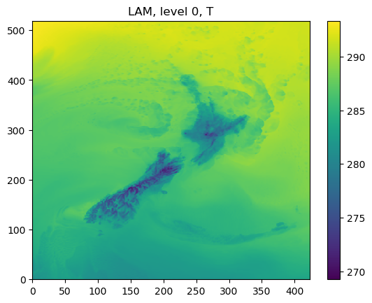
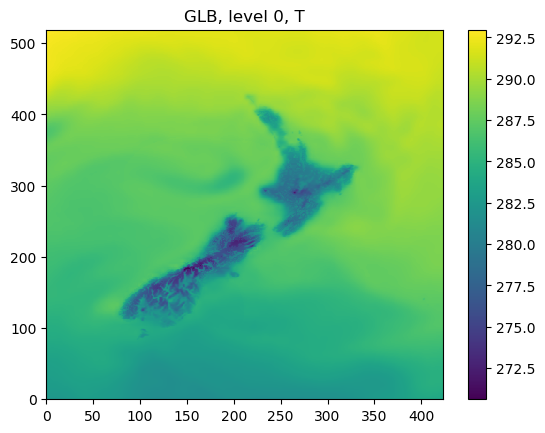
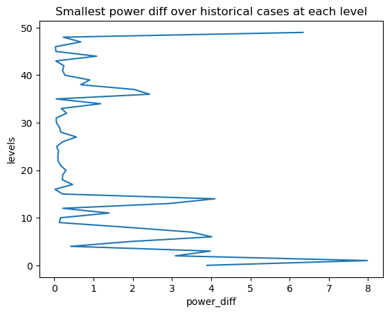
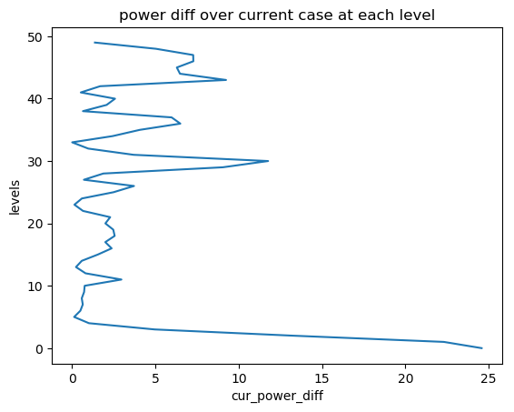
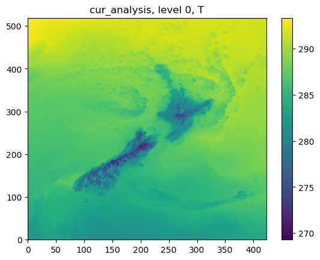

Step 2 run Variational blending¶
We may start blending the global model (e.g., GFS) and LAM model (e.g., WRF) together by either using:
- Using the model errors estimated from STEP 1
- Using the user defined model errors
However, we need to consider that:
if the LAM forecasts has similar magnitude to the global forecasts (e.g., LAM already has strong large scale forcing, or LAM contains a large scale system like a frontal precipitation), the use of blended analysis may lead to worse results (the noises introduced by the blending is larger than the errors inherent in the LAM forecasts)
The blending process would only happen if:
LAM forecasts (over lands) are not very wet
Large scale power ratio in LAM is not that big
STEP 2.1 Determine the model blending criteria¶
STEP 2.1.1 obtain LAM maximum reflectivity:¶
The following codes show the method of obtaining mdbz and topo from a model data:
ncfile = Dataset(datapath)
mdbz = getvar(ncfile, 'mdbz').values
topo = getvar(ncfile, "HGT").values
ncfile.close()
The following figures show mdbz and topo:
 

{kind=link}
STEP 2.1.2 obtain Welch model power over latitudes¶
The codes for calculating the Welch's power over latitude are:
# the ratio of the large scale information in dbz
data_shape = mdbz.shape
model_power_along_lat = []
for i in range(0, data_shape[0]):
cur_dbz = mdbz[i, :]
model_power_along_lat.append(signal.welch(
cur_dbz, nperseg=data_shape[1])[1])
model_power_along_lat = numpy.asarray(model_power_along_lat)
model_power_along_lat = numpy.mean(model_power_along_lat, 0)
The following figure show the mean Welch power over latitudes
{kind=link}
STEP 2.1.3 Obtain the large scale power ratio over the total power:¶
The codes for calculating the large scale power ratio over the total power are:
total_power = numpy.sum(model_power_along_lat)
large_scale_power = numpy.sum(model_power_along_lat[0:max_wavenumber])
large_scale_power_ratio = large_scale_power/total_power
In the above codes, max_wavenumber is usually determined by the distances
between two ratiosondes. For example, in the above case, we have
total_power=134480.78, large_scale_power=42747.742 therefore
large_scale_power_ratio=0.3178725
STEP 2.1.4 Obtain the wet ratio over lands¶
The codes for calculating the wet ratio over lands are:
# the ratio of rainfall areas over lands
mdbz[topo < lowest_land_height] = numpy.NaN
wet_points = numpy.nansum(mdbz > lowest_dbz_consider_dry)
dry_points = numpy.nansum(mdbz < lowest_dbz_consider_dry)
wet_ratio = wet_points/float(dry_points + wet_points)
The maximum dBZ over lands are shown as:
{kind=link}
In the above example, we have wet_points=4257, dry_points=12262,
therefore wet_ratio=0.2577.
STEP 2.1.5 Blending criteria¶
The blending will only be carried out if:
- LAM forecasts large scale forcing is not that strong:
large_scale_power_ratio<WET_CRITERIAS['max_allowed_large_scale_power'], and
- LAM forecasts are not that wet:
wet_ratio < WET_CRITERIAS<WET_CRITERIAS['max_allowed_wet_ratio']
The codes determining the blending criteria are:
if (not max_allowed_large_scale_power_from_hist) or (not max_allowed_wet_ratio_from_hist):
# used in the step of checking the data for creating errors
if large_scale_power_ratio < WET_CRITERIAS['max_allowed_large_scale_power'] \
and wet_ratio < WET_CRITERIAS['max_allowed_wet_ratio']:
return True, large_scale_power_ratio, wet_ratio
else:
return False, large_scale_power_ratio, wet_ratio
Note that it is suggested to use the consistent WET_CRITERIAS in both
blending process and model error estimation.
STEP 2.2 Load model data, the model errors and auxiliary files¶
STEP 2.2.1 Load model forecasts¶
First we load the forecasts from a global, and LAM model:
lam_data, _, _ = var_bld_err_processing.obtain_griddata(args.lam_fcst, cur_model_var)
glb_data, _, _ = var_bld_err_processing.obtain_griddata(args.glb_fcst, cur_model_var)
As an example, the following figures show the forecasts from WRF and GFS at the level of 0:
 {kind=link}
{kind=link}
STEP 2.2.2 Compare the current and historical power differences between LAM and global models¶
Here we compare the current difference between LAM and global models to the one obtained from the process of estimating the model errors.
If the current difference is smaller than the historical one (the smallest one, at each level, in all used historical cases), the blending would not be continued.
STEP 2.2.2.1 Load historical power difference between LAM and global models¶
The following codes show how to calculate the difference between LAM and global models in terms of power spectrum:
hist_power_diff = var_bld_process.obtain_hist_power_diff(args.work_dir, cur_model_var)
For example, in the above example, we can have hist_power_diff as:
[3.891983 7.9804535 3.0878906 ..... 0.03034592 0.67630005 0.23221588 6.340851 ]
with the length as the total model levels.
{kind=link}
STEP 2.2.2.2 Load current power difference between LAM and global models¶
We also load the powers of the current LAM and global models,
and obtain the difference cur_power_diff:
def obtain_cur_power_diff(lam_data, glb_data, max_wavenumber, total_model_levels):
cur_gdata_dict = {}
cur_gdata_dict['lam'] = {}
cur_gdata_dict['glb'] = {}
cur_gdata_dict['lam'][12] = lam_data
cur_gdata_dict['glb'][12] = glb_data
power_spectrum_welch_lam = fft_process.obtain_power_spectrum_using_welch(
cur_gdata_dict, 12, MODELTYPES,
total_model_levels, max_wavenumber)
cur_power_diff = abs(power_spectrum_welch_lam['lam'][12] -
power_spectrum_welch_lam['glb'][12])
return cur_power_diff
As the above section, we can have cur_power_diff as:
[2.4575073e+01 2.2306580e+01 1.3234039e+01 ...... 5.0335388e+00 1.3680725e+00]
with the length as the total model levels
{kind=link}
{kind=link}
STEP 2.2.3 Load model errors¶
The following codes show the way of loading the model errors:
if not args.use_fix_wavenumber:
cur_err_path = os.path.join(
args.work_dir, 'model_errs_{}.tar.gz'.format(cur_model_var))
cur_err = var_bld_process.load_error(cur_err_path)
else:
cur_err = None
The structure of cur_err is
cur_err[VALID_TIME] => cur_err[VALID_TIME]['lam'/'glb'] => cur_err[VALID_TIME]['lam'/'glb'][forecast_lead_hour]
The data shape is consistent with the shape of grid data, e.g., we would have:
cur_err['2018100512']['lam'][12].shape = (50, 519, 423)
STEP 2.2.4 Load user defined error ratio profile and update model errors¶
When we use the prior estimated model errors, we also have a user defined error ratio vertical profile. For example
1. we have the original errors of:
- For a WRF model:
- LAM: at level 15:
- wavenumber1: 0.8, wavenumber15: 0.3
- For a GFS model:
- GFS: at level 15:
- wavenumber1: 0.2, wavenumber15: 0.75
2. The user defined error ratio vertical profile:
- at level 15:
- LAM err profile: 0.7;
- GFS err profile: 0.1
3. So the final model error is:
- For WRF final error:
- LAM: at level 15:
- wavenumber1: 0.8 * 0.7 = 0.56
- wavenumber15: 0.3 * 0.7 = 0.21
- For GFS final error:
- GFS: at level 15:
- wavenumber1: 0.2 * 0.1 = 0.02
- wavenumber15: 0.75 * 0.1 = 0.075
The codes to do this are:
def _update_model_error(
cur_glb_error, cur_lam_error,
glb_model_err_ratio, lam_model_err_ratio):
cur_glb_error = cur_glb_error * glb_model_err_ratio
cur_lam_error = cur_lam_error * lam_model_err_ratio
return cur_glb_error, cur_lam_error
The output shape of the model errors (e.g., either 1cur_glb_error`1 or `1cur_lam_error`)
is the shape of grid data (e.g., cur_glb_error.shape = (519, 423))
STEP 2.2.5 convert model errors from an array to a matrix¶
Then we need to convert the errors from above to a matrix:
vector_out = []
for i in range(0, matrix_in.shape[0]):
for j in range(0, matrix_in.shape[1]):
vector_out.append(matrix_in[i, j])
return vector_out
For example, if the original shape of model error is matrix_in.shape = (519, 423) will
become vector_out.shape = (219537,)
STEP 2.2.6 create the final error matrix:¶
The final error matrix is calculated at this step:
cur_lvl_glb_fcst_err = cur_inv_fft_err_glb*cur_inv_fft_err_glb
cur_lvl_lam_fcst_err = cur_inv_fft_err_lam*cur_inv_fft_err_lam
lvl_glb_fcst_err_list.append(cur_lvl_glb_fcst_err)
lvl_lam_fcst_err_list.append(cur_lvl_lam_fcst_err)
We go through the final error matrix for each valid time, and store the data
first in either lvl_glb_fcst_err_list or lvl_lam_fcst_err_list, and
then we average the errors as:
lvl_glb_fcst_err = numpy.nanmean(
numpy.asarray(lvl_glb_fcst_err_list), 0)
lvl_lam_fcst_err = numpy.nanmean(
numpy.asarray(lvl_lam_fcst_err_list), 0)
For example, the shapes of lvl_glb_fcst_err and lvl_lam_fcst_err
are (219537, 1)
STEP 2.3 Best Linear Unbiased Estimator¶
STEP 2.3.1 Obtain the model error coefficient¶
The codes for BLUE is shown below:
err_componenet0 = (lvl_glb_fcst_err + lvl_lam_fcst_err)**(-1)
For example, the shape of err_componenet0 is (219537, 1). Then in order
to calculate BLUE fast, we convert the regular shape of (219537, 219537)
(e.g., from err_componenet0 * err_componenet0) to sparse matrix:
matrix_length = lvl_lam_fcst_err.shape[0]
matrix_range = numpy.array(range(0, matrix_length))
lvl_lam_fcst_err = csc_matrix(
(lvl_lam_fcst_err.reshape(matrix_length), (matrix_range, matrix_range)),
shape=(matrix_length, matrix_length))
err_componenet0 = csc_matrix(
(err_componenet0.reshape(matrix_length), (matrix_range, matrix_range)),
shape=(matrix_length, matrix_length))
From the above codes, we have the shapes of lvl_lam_fcst_err
and err_componenet0 as (219537, 219537). Then the coefficient from the errors is:
err_coef = lvl_lam_fcst_err.dot(err_componenet0)
all_err_coef.append(err_coef)
The shape of err_coef is (219537, 219537), and all_err_coef is a list contains all levels.
STEP 2.3.2 Smooth the model error coefficient over levels:¶
The codes below show that how the model weight
(or called model error coefficient) is smoothed
(e.g., model_weights means all_err_coef from the above section):
def smooth_model_weights(model_weights, total_model_levels, gaussian_sigma=1.0):
""" using a gaussian filter to smooth the model weights"""
# 1: extract the model weight diagnoal
model_weights_diag = []
for lvl in range(0, int(total_model_levels)):
model_weights_diag.append(model_weights[lvl].diagonal())
model_weights_diag_array = numpy.asarray(model_weights_diag)
# 2: filter the model weight diagnoals vertically
model_weights_diag_filtered = gaussian_filter1d(
model_weights_diag_array, gaussian_sigma, axis=0)
# 3: revert the diagnoals back to a sparse matrix
matrix_length = model_weights_diag_array.shape[1]
matrix_range = numpy.array(range(0, matrix_length))
smoothed_model_weights = []
for lvl in range(0, int(total_model_levels)):
cur_model_weights = csc_matrix(
(model_weights_diag_filtered[lvl, :], (matrix_range, matrix_range)),
shape=(matrix_length, matrix_length))
smoothed_model_weights.append(cur_model_weights)
return smoothed_model_weights
STEP 2.4 Running analysis¶
After we obtained the model error coefficient (BLUE), we can run analysis using the current LAM and global model forecasts:
STEP 2.4.1 obtain the current FFT of LAM and global forecasts level by level:¶
The codes for obtaining the current FFT for both LAM and global forecasts are:
for lvl in range(0, int(args.total_model_levels)):
cur_lvl_lam_data = lam_data[lvl, :, :]
cur_lvl_glb_data = glb_data[lvl, :, :]
(cur_lam_fft_coef, power_spectrum_lam, _, _) = fft_process.run_fft(cur_lvl_lam_data)
(cur_glb_fft_coef, power_spectrum_glb, _, _) = fft_process.run_fft(cur_lvl_glb_data)
The following figures show cur_lvl_lam_data and cur_lvl_glb_data at the level 0:
{kind=link}
{kind=link}
STEP 2.4.2 running analysis:¶
If all the criteria of blending (e.g., the power difference is big enough, and the background is not that wet) are met, we run the analysis as:
cur_analysis_fft_coef = cur_model_weight*(
cur_glb_fft_coef_vector - cur_lam_fft_coef_vector) + \
cur_lam_fft_coef_vector
# convert fft coef back to grid data
cur_analysis = var_bld_process.freq2grid(
cur_analysis_fft_coef, cur_lvl_lam_data.shape)
Where cur_model_weight has the shape of (219537, 219537), and
cur_glb_fft_coef_vector/cur_lam_fft_coef_vector has the
shape of (219537, 1), Note that the grid data shape is (519, 423).
Then we can have the cur_analysis as:
{kind=link}
{kind=link}